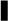
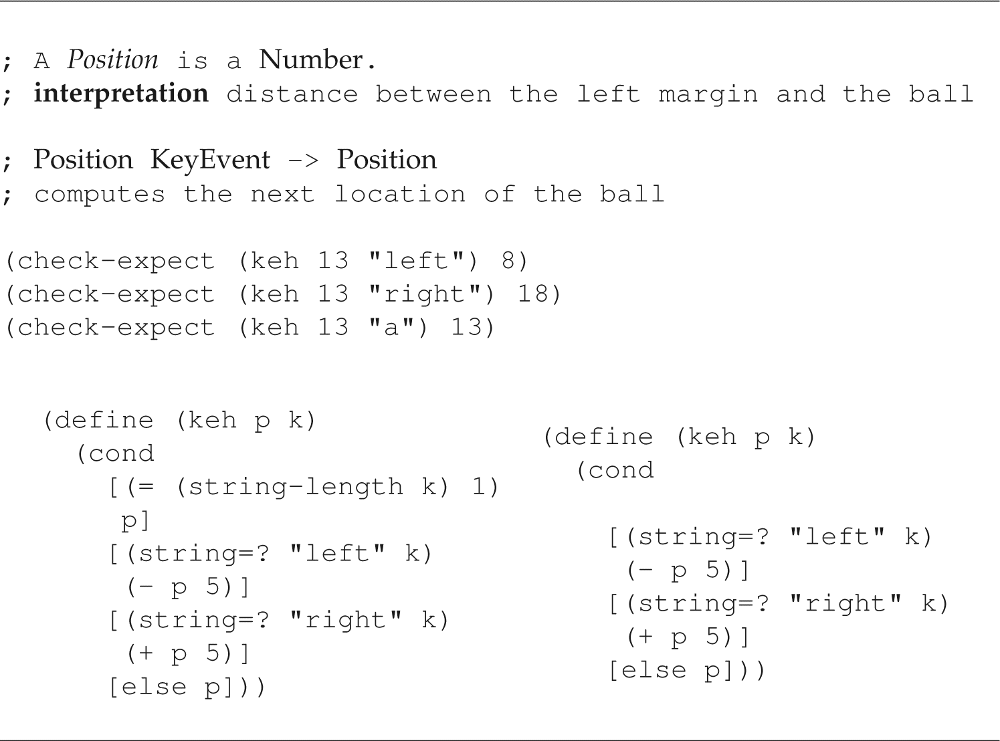

4.3 Enumerations
Not all strings represent mouse events. If you looked in HelpDesk when the last section introduced the on-mouse clause for big-bang, you found out that only six strings are used to notify programs of mouse events:
; A MouseEvt is one of these Strings:
; -- "button-down"
; -- "button-up"
; -- "drag"
; -- "move"
; -- "enter"
; -- "leave"
The interpretation of these strings is quite obvious. One of the first two strings shows up when the computer user clicks the mouse button or releases it. In contrast, the third and fourth are about moving the mouse and possibly holding down the mouse button at the same time. Finally, the last two strings represent the events of a mouse moving over the edge of the canvas: either going into the canvas from the outside or exiting the canvas.
More importantly, the data definition for representing mouse events as strings looks quite different from the data definitions we have seen so far. It is called an enumeration, and it is a data representation in which every possibility is listed. It should not come as a surprise that enumerations are common. Here is a simple one:
; A TrafficLight is one of the following Strings:
; -- "red"
; -- "green"
; -- "yellow"
; interpretation the three strings represent the three
; possible states that a traffic light may assume
It is a simplistic representation of the states that a traffic light can take on. Unlike others, this data definition also uses a slightly different phrase to explain what the term TrafficLight means, but this is an inessential difference.
We call it “simplistic” because it does not include the “off” state, the “blinking red” state, or the “blinking yellow” state.
Programming with enumerations is mostly straightforward. When a function’s input is a class of data whose description spells out its elements on a case-by-case basis, the function should distinguish just those cases and compute the result on a per-case basis. For example, if you wanted to define a function that computes the next state of a traffic light, given the current state as an element of TrafficLight, you would come up with a definition like this one:
; TrafficLight -> TrafficLight
; yields the next state given current state s
(check-expect (traffic-light-next "red") "green")
(define (traffic-light-next s)
(cond
[(string=? "red" s) "green"]
[(string=? "green" s) "yellow"]
[(string=? "yellow" s) "red"]))
Because the data definition for TrafficLight consists of three distinct elements, the traffic-light-next function naturally distinguishes between three different cases. For each case, the result expression is just another string, the one that corresponds to the next case.
Exercise 50. If you copy and paste the above function definition into the definitions area of DrRacket and click RUN, DrRacket highlights two of the three cond lines. This coloring tells you that your test cases do not cover the full conditional. Add enough tests to make DrRacket happy.

Exercise 51. Design a big-bang program that simulates a traffic light for a given duration. The program renders the state of a traffic light as a solid circle of the appropriate color, and it changes state on every clock tick. What is the most appropriate initial state? Ask your engineering friends.
The main idea of an enumeration is that it defines a collection of data as a finite number of pieces of data. Each item explicitly spells out which piece of data belongs to the class of data that we are defining. Usually, the piece of data is just shown as is; on some occasions, the item of an enumeration is an English sentence that describes a finite number of elements of pieces of data with a single phrase.
Here is an important example:
; A 1String is a String of length 1,
; including
; -- "\\" (the backslash),
; -- " " (the space bar),
; -- "\t" (tab),
; -- "\r" (return), and
; -- "\b" (backspace).
; interpretation represents keys on the keyboard
You know that such a data definition is proper if you can describe all of its elements with a BSL test. In the case of 1String, you can find out whether some string s belongs to the collection with
(= (string-length s) 1)
An alternative way to check that you have succeeded is to enumerate all the members of the collection of data that you wish to describe:
; A 1String is one of:
; -- "q"
; -- "w"
; -- "e"
; -- "r"
; …
; -- "\t"
; -- "\r"
; -- "\b"
If you look at your keyboard, you find ←, ↑, and similar labels. Our chosen programming language, BSL, uses its own data definition to represent this information. Here is an excerpt:
; A KeyEvent is one of:
; -- 1String
; -- "left"
; -- "right"
; -- "up"
; -- …
You know where to find the full definition.
The first item in this enumeration describes the same bunch of strings that 1String describes. The clauses that follow enumerate strings for special key events, such as pressing one of the four arrow keys or releasing a key.
At this point, we can actually design a key-event handler systematically. Here is a sketch:
; WorldState KeyEvent -> …
(define (handle-key-events w ke)
(cond
[(= (string-length ke) 1) …]
[(string=? "left" ke) …]
[(string=? "right" ke) …]
[(string=? "up" ke) …]
[(string=? "down" ke) …]
…))
This event-handling function uses a cond expression, and for each line in the enumeration of the data definition, there is one cond line. The condition in the first cond line identifies the KeyEvents identified in the first line of the enumeration, the second cond clause corresponds to the second data enumeration line, and so on.
When programs rely on data definitions that come with the chosen programming language (such as BSL) or its libraries (such as the 2htdp/universe library), it is common that they use only a part of the enumeration. To illustrate this point, let us look at a representative problem.
Sample Problem Design a key-event handler that moves a red dot left or right on a horizontal line in response to pressing the left and right arrow keys.
Figure 21 presents two solutions to this problem. The function on the left is organized according to the basic idea of using one cond clause per line in the data definition of the input, KeyEvent. In contrast, the right-hand side displays a version that uses the three essential lines: two for the keys that matter and one for everything else. The reordering is appropriate because only two of the cond-lines are relevant, and they can be cleanly separated from other lines. Naturally, this kind of rearrangement is done after the function is designed properly.

Figure 21: Conditional functions and special enumerations